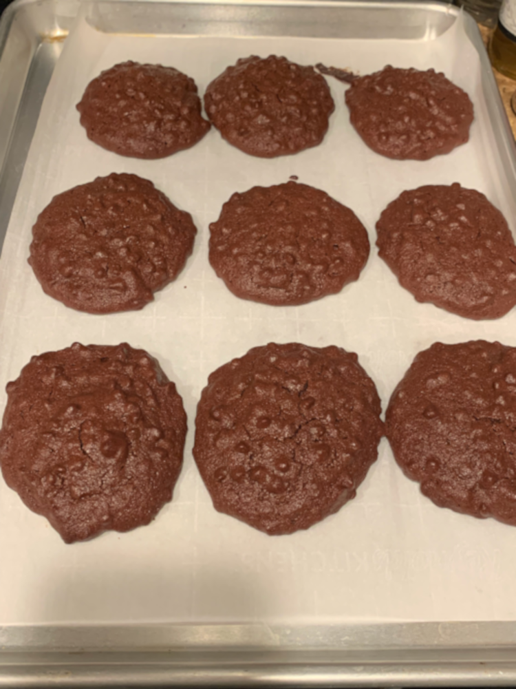

This cooking site is dedicated towards helping:
- Beginner Cooks
- Disabled people
- People with Allergies
- People with food intolerances
- People with limited time and budgets
With just a little adjustment, cookies like the ones shown below can be made safely for almost anyone and by almost anyone!
